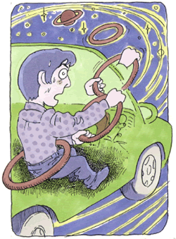

広場恐怖2
インターネットから現実の世界へ
（乗り物恐怖、視線恐怖、不安神経症、他）
松山 大輔（仮名）26歳・会社員
高速道路が怖い

私は釣りが趣味であり、土日になると釣り道具をもって毎週のように釣りに出かけます。いつもと同じように高速道路に乗り、目的地に向かいました。たまたま過労による寝不足があったのでしょうか、高速道路を運転中に中央線にひきつけられるような感覚に陥り、とても恐怖に感じました。
それから私は高速道路に乗ることが非常につらくなり、「なんだかおかしい、どうして？」と迷いを重ねていったのです。パソコソ中心の仕事であったため、視力が悪くなって高速のスピードについていくことがつらくなったのだろうと、自分で勝手に解釈していました。しかし、目が悪いのとはどうも原因が違うようです。「なんでだろう」と、そのことばかりが頭から離れなくなり、これは大変なことになってしまった、もうあれだけ大好きだった車にも乗れなくなってしまった、一体原因は何なのだろうと不安感は増すばかりでした。
とうとう耐え切れず大学病院の眼科を受診します。結果はまったく異常なし。では神経の問題があるのだろうと眼科の受診後、じかに精神科を予約、受診しましたが、不安に効く薬はあるが眠気をともなうので運転が問題では処方できないとのことでした。「あんまり気にすることはないでしょう」「気にしすぎですよ」と言われても、一体どうすれば治るんだ？とさらに悩みは深まっていくばかりでした。そして徐々に高速道路を使うことを避けるようになり、さらにその不安感は一般道路を運転している時にも頻繁に起こるようになり、車に乗ることに異常に恐怖を覚え、あれだけ運転することが大好きだった私でしたが、ほとんど車に乗れなくなってしまったのです。
そして発症、服薬の日々
そんな状況でも、仕事には精一杯取り組んでいました。しかし、仕事上でも大きな転機が訪れました。入社してからずっと夜遅くまで仕事していた私が、五年目で急にじっくりと考え、落ち着いて仕事ができる部署に異動となり、比較的時間もあまることが多くなりました。正直に言いますと、あまっているのではなく、自分に与えられている目的に対して仕事をどう進めていけばいいか、時間をどう使っていけばいいかわからなかったといった方が正解なのかもしれません。
気持ちだけが空回りしていた私は、「もっと仕事をしなくてはならない」「もっとがんばらなくてはならない」といった観念的な気持ちで一杯でした。思えば思うほど空回りしていきます。そして二十五歳の誕生日、私はいままで体験したこともない不安感に襲われ、発作を起こしました。心臓がバクバク、手足は震え、得意なパソコンがうまく操作できない、びっくりした私は母親に電話をして苦しさを訴え、早退し会社にまで迎えに来てもらい、心療内科に飛び込みました。
薬は一週間ごとに増えていきます。「電車が怖い、卒倒しそうだ、自分が自分じゃないみたいだ」と訴えてはまた一錠、「自殺しそうだ、気が狂いそうだ」と訴えれば、「じゃあ、この薬は○〇に効くから飲んでください」とまた一錠追加です。私は母親に「もう死ぬかもしれない」と泣きながら訴えて困らせることもありました。
森田療法との出会い
私は不安と闘いながら、自分の症状をインターネットで打ち込み、検索することで森田療法のことを知りました。そこには「恐怖突入」ということばがあり、それから私は不安があっても目的から決して逃げないと心に決め、毎日を過ごしました。電車は震えながらでも乗っていました。
しかしながら、まだ服薬は続けておりましたので、当時の私は、できれば薬を飲まずに治療するという森田療法と、薬物療法に大きな葛藤があり、もし飲んで治るならこのまま飲みつづけようかとも思いましたが、心の中では森田療法に対する大きな期待が自分の中にあり、「これでダメだったら多分頼るものも残ってない、もうヤケクソだ、いっちょうやったろか」と一途に懸ける気持ちになっていきました。
森田療法のことを全然知らない私でしたが、「なすべきをなす」という前向きな態度に惹かれたのでしょう。そして服薬を続けながら、いつか断薬できる日を夢見て、森田療法の勉強を続けていきました。また、この時期に生活の発見会（神経症の自助グループ）の存在を知り、森田療法で治るならと、当時通っていた心療内科をやめて、近隣の森田療法協力医の先生に受診を申し込みました。その先生は、「まず発見会に入会し、集談会（生活の発見会の会合）に参加しなさい。君の言う通りの薬を好きなだけ何ケ月分でも処方する。けれども、本番は薬を止めてからだ」と私にアドバイスをくださったのを今でも覚えています。そんなことばが徐々に私を変えていきました。
森田療法を勉強し、初めに心がけたことは、「決して愚痴を言わぬ」ということでした。それまでは前述の通り、両親に「ああ、しんどい」「つらい」と言いつづけていました。しかし、もうこれ以上両親に迷惑をかけられないという一心から、口が裂けても愚痴を言わぬよう心がけました。自分もつらいですが、それを見て心配している両親の方がよっぽどつらいということに気づいたからです。後で考えてみれば、このことはとても大切なことであることに気づきました。
インターネットで大発見
まだ集談会に参加していなかった私はインターネットで『メンタルヘルス岡本記念財団』のホームページを知り、その中で開催されていた体験フォーラムに参加することに決めました。そこは、Q＆A方式となっており、個人の悩みを書き込んで管理者のかたが回答するという形式のものでした。そこに私は、「こんな内容で困っています」と書き込みをすると、ていねいに回答をくださいました。苦しい時、とても支えになりました。
そんなある日、私は東京へ二ヵ月間の出張を命じられました。こんな状態で行こうか、断ろうか迷いましたが、逃げてはいけないと意を決し、東京へと出張に向かいました。東京では、薬を飲みながらも出社、安定剤で頭がもうろうとし集中できない、移動中の地下鉄の電車では頻尿恐怖で疲れ果てていました。現地で泌尿器科を受診しても、もちろん異常はありません。けれども私は「ここで逃げて帰ったら終わりだ」と最後の最後まで自分の力を出し尽くして一つひとつの仕事に一生懸命取り組みました。帰ってから、私はどうしても治したいという一心から生活の発見会に入会、参加することにし、積極的に財団のホームページにも参加するようになりました。
心を支える体づくり
そしてずいぶんと回復した私は、各地の集談会へ出向くようになりました。森田先生はこうおっしゃっておられます。「病気ではないから薬は必要ない」。よし、もう薬は飲まないぞ。どうにでもなれと、少しずつではありましたが、薬と縁を切ることにも無事成功し、森田療法に没頭していきました。
現在のメディアでは、インターネットというツールはあまり良い評価を受けないこともありますが、私の場合は違いました。初めはインターネットという世界でも、そこから現実の世界へと足を踏み入れ、どんどんと同じ悩みを持つかたがたとの交流を深めて、森田を理論療法としてとらえるのではなく、体得、実体験として学んでいくことができたのです。
入社してから数年間、ほとんど運動という運動をしていなかった私ですが、M氏に教えていただいた基礎体力の重要性や生活リズムの大切さにも気づき、自分の心を支える体を作るため、片道10キロメートル以上ある自転車通勤を始めました。発症当時の私は食欲が減退して一杯のご飯を食べるのが精一杯でしたが、今では食欲も回復し、体も徐々に締まり、三度の食事が本当にありがたい。食欲がありすぎて困るほどです。生きていることにこんなに感謝したことはいままでありませんでした。
僕は「生身の人間」だった
最後に、いま私は、不安は不安のままで手を動かし、足を動かし、がんばっています。決して嫌な感情を一切排除するわけでもなく、感じなくなったわけでもありませんし、症状が出なくなったのでもなし、性格が変わったのでもありません。怖いものは怖いのです。しかし、自分に対する理解がずいぶんと深まった、受け止め方が変わったとは言えるでしょう。怖いままでその場におれるようになりました。
また、森田療法を学んでいく中でとても大切なことに気づかされました。それは「生身の人間」であったということです。体の調子が悪い時もあって当たり前だということ。時として、とらわれ、はからいをするだろう。それでいいじゃないか。ただ、感情の事実は事実として認め、今置かれている境遇に、与えられた仕事に反応し手を出していく、まずは何でもやってみなさい。神経質は決して病気じゃないんだよ、人間である証拠だよと。森田先生をはじめ発見会の先輩がたは私にそんなことを教えてくださいました。